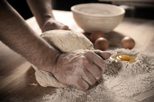

Inizia domani 
Lo Struppolo/festa a KM ZERO
e sceglie come partner
Slow Food per elevare l’indice di piacere
2-3-4 settembre
San Salvatore Telesino
ingresso libero
{kind=link}
A poche ore dall’inizio dell’evento la Pro loco di San Salvatore Telesino, riesce ad arricchire la proposta inserendo in programma due laboratori del gusto curati da Slow Food che presenta 2 prove di abbinamento curate da Maria Giovanna De Lucia, fiduciaria SLOW FOOD – Condotta Valle Telesina. Nella prima serata, sabato 3 settembre, la prova di abbinamento sarà fatta con 2 SPUMANTI DI FALANGHINA: quello della Vinicola del Titerno e quello della cooperativa agricola La Guardiense. Domenica 4 settembre lo struppolo incontrerà 2 birre artigianali prodotte sul nostro territorio: la KOLSCH del birrificio Saint John’s e la CUBULTERIA del birrificio KARMA. Gli eventi di Slow Food saranno a numero chiuso, per prenotazioni e informazioni si può contattare la pro loco di San Salvatore Telesino.
info@prolocosansalvatoretelesino.it
PROGRAMMA 2-3-4 SETTEMBRE 2011
ore 21.00
Stand Gastronomici e Glocal market/Percorso del gusto da Piazza Nazionale
Mastro Struppolo: laboratorio di preparazione dello struppolo Piazza Nazionale
Mostre – Comics for Africa di Roberto Riccio/Biblioteca Comunale
Bici e dintorni mostra fotografica/Vico Notaro
Carnevale sansalvatorese mostra storico-fotografica di Costantino Ferri
Visite Guidate Telesia Antiquarium /Abbazia benedettina fino alle ore 22.00
Mercatino del baratto e dell’usato dei bambini, Animazione bambini/Parco Bambinopoli
Prove di abbinamento a cura di SLOW FOOD Valle Telesina
sabato 3 settembre ore 20.00 Lo struppolo incontra la falanghina-spumante della Vinicola del Titerno e della cooperativa agricola La Guardiense
domenica 4 settembre ore 20.00 Lo struppolo incontra la birra artigianale del birrificio Saint John’s e del birrificio Karma
Musica dal vivo tutte le sere in Piazza Nazionale e Largo Chiesa
> tutti prodotti utilizzati e proposti sono di provenienza locale, non sono stati trasportati per lunghe distanze, altamente genuini e garantiti
> le stoviglie sono di bioplastica completamente biodegradabili
> l’acqua è di rete
ufficio stampa Domenico Tescione d_tescione@libero.it
informazioni info@prolocosansalvatoretelesino.it
PRO LOCO SAN SALVATORE TELESINO
via Plebiscito
82030 San Salvatore Telesino (BN)
Tel. 0824.948144
www.prolocosansalvatoretelesino.it